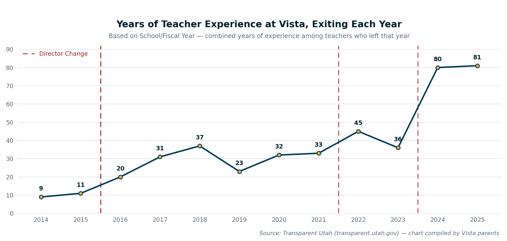
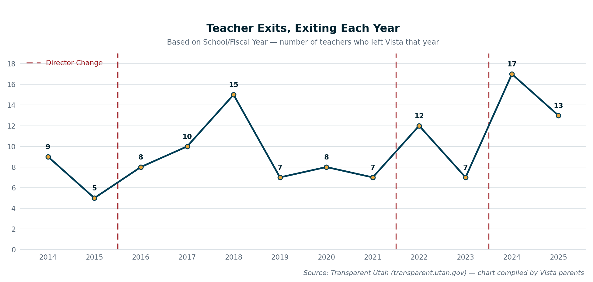
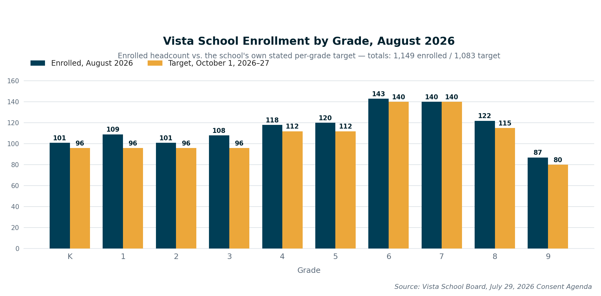
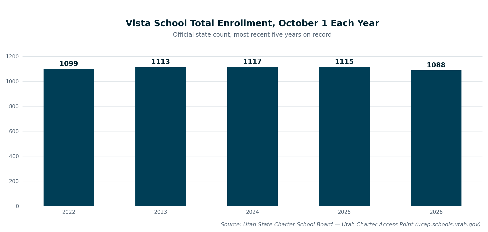
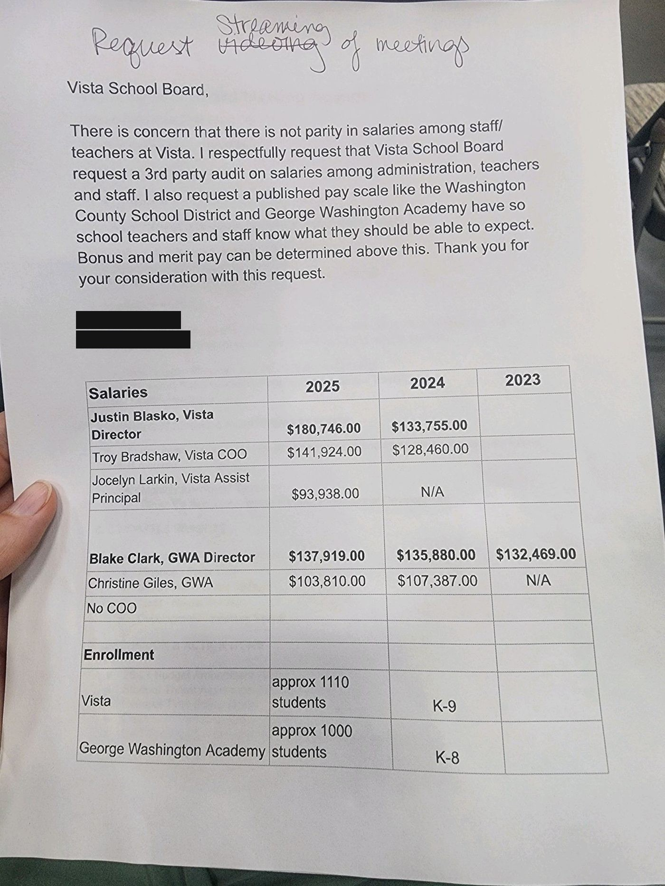

A Closer Look at Vista's Leadership
Vista's current Executive Director, Dr. Justin Blasko, was appointed in August 2023. Before coming to Vista, Blasko was Superintendent of the Monroe School District in Washington State, where he was placed on administrative leave in December 2021 after an independent investigation substantiated complaints of bullying, intimidation, and unprofessional conduct toward staff. He resigned in July 2022 with a severance package of roughly $396,000. St. George News reported at the time Vista hired him that parents raised concerns both about this background and about the Board's lack of communication around the decision.
![Vista School organizational chart: Vista School Board at top, then Dr. Justin Blasko as Executive Director. Reporting to him: Christine Giles (Deputy Director), Skyler Perkes (Human Resources), and Troy Bradshaw (Chief Operating Officer). Under Giles: Jocelyn Larkin (K-5 Principal) with K-5 Teachers, Chad Allman (6-9 Principal) with 6-9 Teachers, Alicia Hutchinson (SPED Coordinator), Katelynn George (Title 1 Coordinator), Jenna Ayers (Behavior Coach), LaNessa Stevens (Learning Coach), and Marilyn Russell (ESL Coordinator). Under Perkes: Bruce Hatch (Assessment Director / IT Specialist) and Marie Ehlers (Head School Counselor, 7-9), who oversees Danielle Robb (School Social Worker), Shelli Jones (K-6 Counselor), and Nicole Richins (College and Career Readiness / Student Council Adviser). Under Bradshaw: Food Service, Business Office, Transportation, IT Office, and Facilities. Titles current per vistautah.com; the SPED Coordinator and a few coaching titles differ from the original board-meeting chart, which listed older names/titles for those roles.](assets/leadership/vista-org-chart.png)
Vista's organizational chart, as presented at a public Board meeting, redrawn here for readability. Source: vistautah.com.
Administrative & Teacher Turnover
Compiled by Vista parents using Utah's public compensation database, Transparent Utah, and redrawn here for readability. The dashed vertical lines mark years in which Vista changed directors. These charts were put together by parents, not produced or independently verified by Saving Vista School — the underlying data is public and can be checked directly at transparent.utah.gov.

Combined years of experience held by teachers who left Vista, by year.

Number of teachers exiting Vista, by year.
Enrollment
Presented at Vista's July 29, 2026 Board meeting, redrawn here for readability.

Enrollment by grade, August 2026, compared to the school's own stated targets.
For independent confirmation, the Utah State Charter School Board publishes its own official enrollment count for every charter school each year.

Vista's official October 1 headcount, 2022–2026, per the Utah State Charter School Board's Utah Charter Access Point dashboard.
A Parent Request to the Board

A parent's request to the Vista School Board for a third-party salary audit and a published pay scale, with administrator salary figures compared to George Washington Academy. Name and phone number redacted at the author's and Russ's request.
![Bar chart comparing administrator salaries at Vista School and George Washington Academy. Full-year 2025 figures: Directors $180,746 vs $137,919; Chief Operating Officer $141,924 vs no equivalent role; Assistant Principal/comparable role $93,938 vs $103,810. Also shown, marked as 2026 year-to-date and not an annual rate: Christine Giles moved from George Washington Academy (Assistant Director, $103,810 in 2025) to Vista (Deputy Director, $18,784 paid so far in 2026); Chad Allman, hired as Vista's 6-9 Principal in 2026, has been paid $20,656 so far this year, with no comparable new hire at George Washington Academy.](assets/leadership/salary-comparison-chart.png)
The same salary comparison, redrawn from the figures in the letter above, plus current figures for two recent Vista hires (Christine Giles, who moved from George Washington Academy, and Chad Allman) shown as 2026 year-to-date pay rather than an annual rate, per Utah's public compensation data.
Sources
- St. George News: "Hindsight is 20/20": Vista School in Ivins welcomes new director amid concerns from parents (Aug. 11, 2023)
- HeraldNet: "'Expletive,' 'idiot': Scathing report paints Monroe schools' supe as bully" (May 27, 2022)
- Seattle Times: Monroe superintendent to resign, receive nearly $400K despite complaints about toxic behavior
- DocumentCloud: Independent investigation report into complaints against then-Superintendent Justin Blasko, Monroe School District